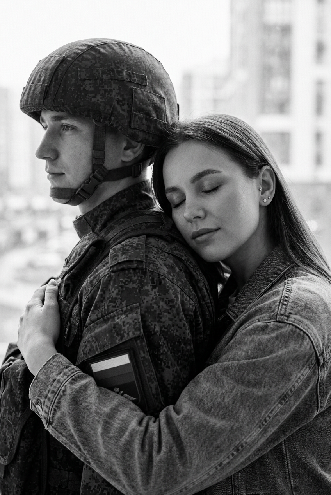
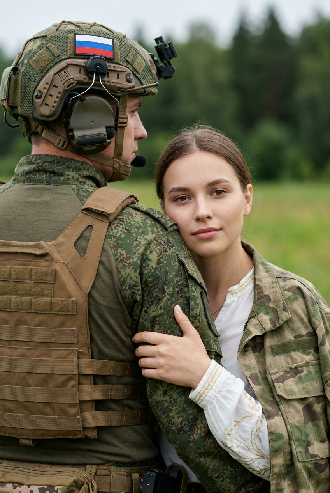
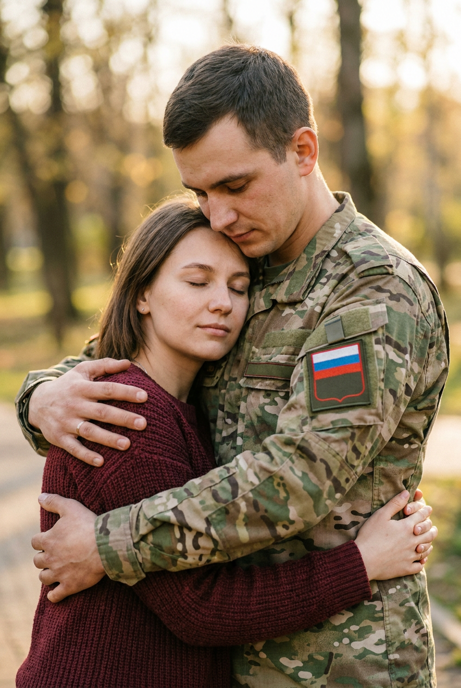
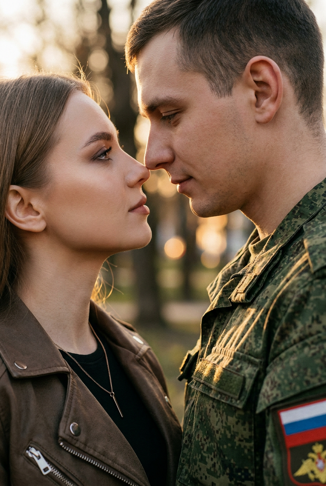
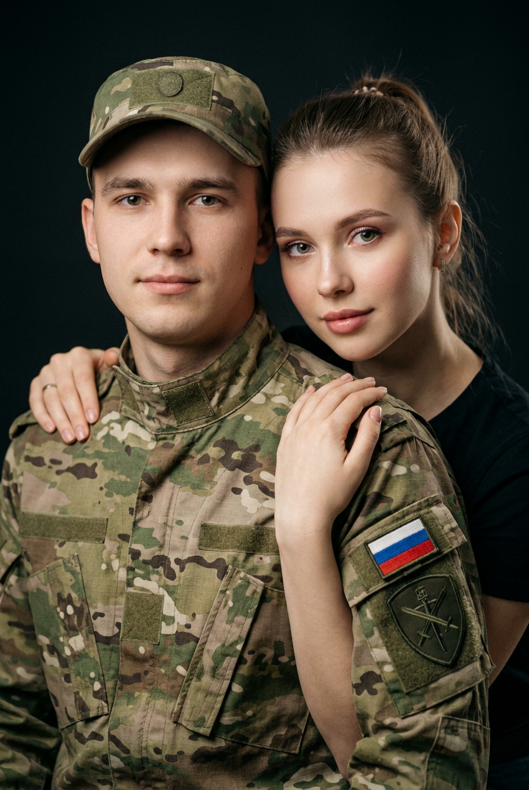
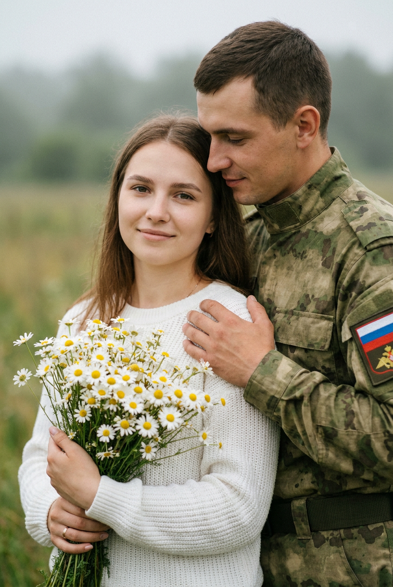
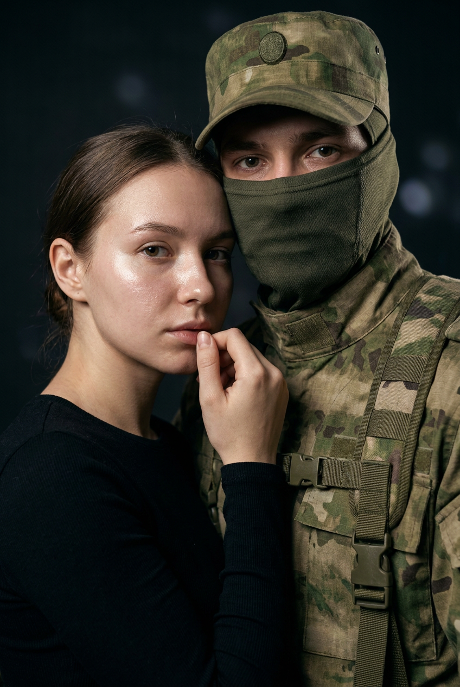
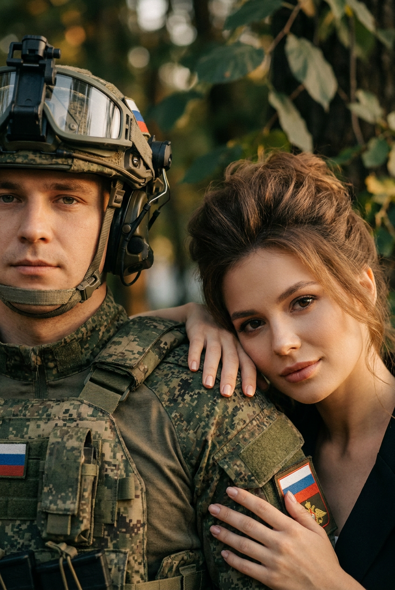
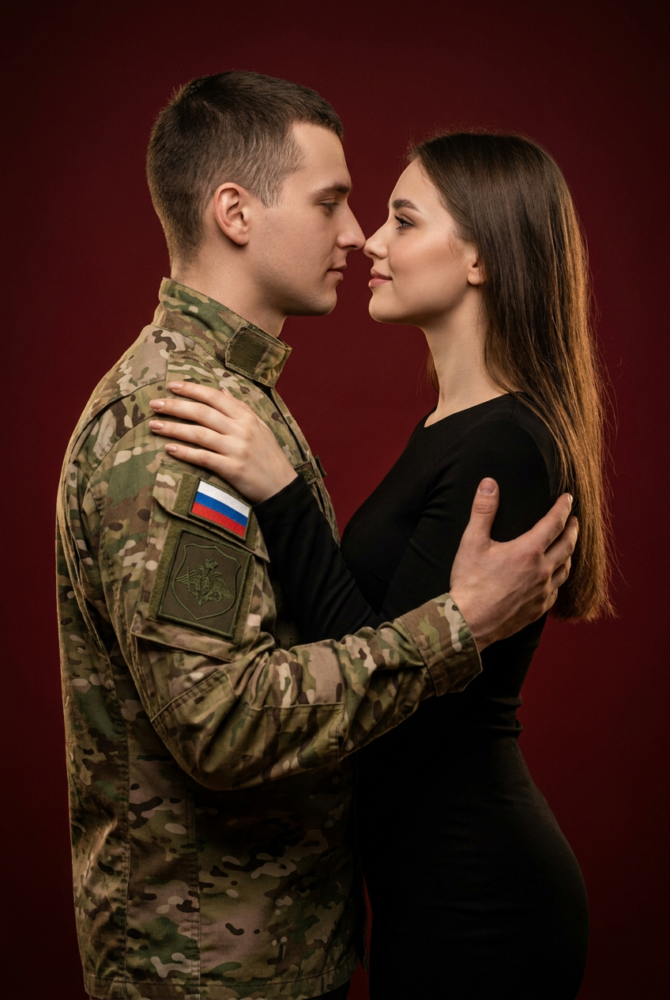
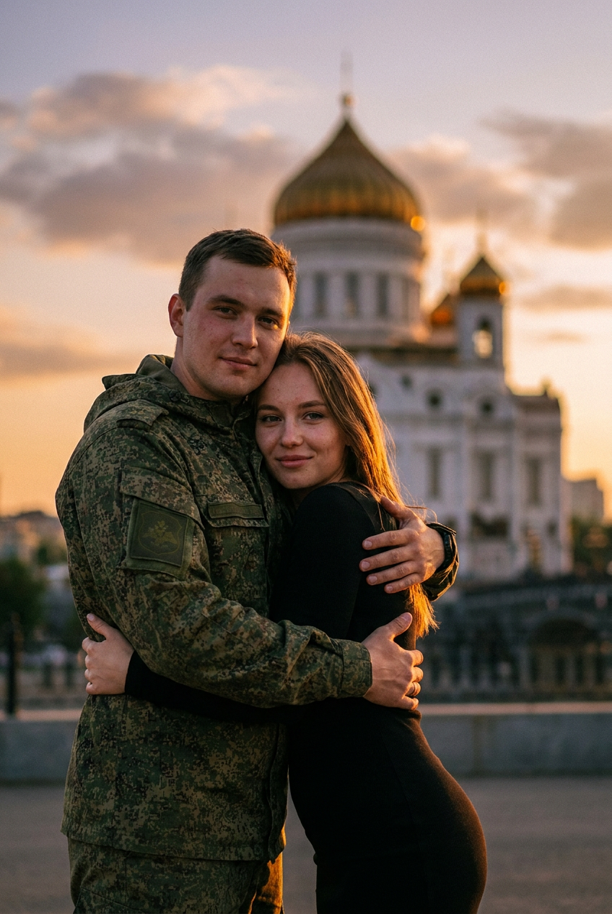

ИИ-фото с участником СВО: 10 промптов для нейросети

Обычная фотография не всегда передаёт близость, ожидание и радость встречи с участником СВО. Генерация помогает собрать такой кадр по референсу, выбрать нужную атмосферу и аккуратно добавить детали формы, экипировки и окружения.
В подборке — 10 сценариев: от чёрно-белого городского портрета и студийной съёмки до объятий в форме, букета ромашек и драматичного кадра с закрытым лицом. Каждый промпт можно адаптировать под свои фотографии.
Как сгенерировать такое фото: пошагово
Нужен снимок анфас при ровном свете, лицо в кадре целиком, без тёмных очков и головных уборов. Разрешение от 1000 пикселей по короткой стороне. Чем чётче исходник, тем точнее модель повторит черты.
Выберите сценарий ниже и нажмите «Копировать» — текст уйдёт в буфер целиком, вместе с командой сохранения внешности. Эта команда стоит первой строкой и отвечает за то, чтобы на выходе было ваше лицо, а не случайное.
Кнопка «Сгенерировать» рядом с каждым промптом открывает модель в новой вкладке. Nano Banana Pro работает с референсом лица — в отличие от моделей, которые генерируют портрет с нуля и узнаваемость теряют.
Промпт — в поле ввода, портрет — через загрузку референса. Порядок значения не имеет, но без референса команда сохранения внешности работать не будет: модели нечего сохранять.
Для сторис и ленты берите 9:16, для превью и обложек — 4:3. Первый результат редко идеален: если поза или свет ушли не туда, поправьте соответствующую часть промпта и запустите заново. Обычно хватает двух-трёх итераций.
10 промптов для генерации
1. Объятия в городском кадре
Строго сохранить внешность по загруженному референсу: черты лица, пропорции, мимику и текстуру кожи без изменений. Вертикальная чёрно-белая фотореалистичная фотография в кинематографичном стиле, средний план пары, городской архитектурный фон растворяется в сильном боке. Лица девушки и парня взять с загруженного референса и передать без изменения индивидуальных черт, пропорций, формы глаз, бровей, носа, губ и овала лица; мимика естественная. Слева на переднем плане мужчина-военнослужащий ВС РФ в камуфляже, показан в профиль. На голове камуфляжная каска, фуражка или кепи с ремешками и вентиляционными отверстиями. Форма реалистично сшита: видны складки, швы и фактура ткани. На плече крупный патч в цветах российского флага, без мелких надписей и логотипов. Выражение спокойное, взгляд отведён в сторону. Справа молодая женщина с естественным макияжем и небольшими серьгами-гвоздиками обнимает мужчину, её руки лежат на его спине и плече. Натуральная кожа, мягкий контраст, документальная эмоциональность.
2. Поддержка рядом с бойцом

Строго сохранить внешность по загруженному референсу: черты лица, пропорции, мимику и текстуру кожи без изменений. Фотореалистичный вертикальный портрет пары, средний план, спокойная поддерживающая сцена без агрессии. Использовать лица девушки и парня с референса, точно сохранив их узнаваемые черты, естественную мимику и пропорции. Слева находится мужчина-военнослужащий в лесном или пиксельном тактическом камуфляже. На нём бежево-коричневый бронежилет с модульной системой MOLLE, шлем с креплениями, ремнями и гарнитурой; мужчина показан со спины, слегка повернувшись в профиль. На шлеме заметна нашивка с флагом Российской Федерации, мелкие надписи не читаются. Справа стоит молодая девушка с лёгким макияжем и уверенным спокойным выражением лица. Она обнимает военного за руку. На девушке камуфляжная куртка или костюм поверх белой рубашки с тонкой золотистой вышивкой на рукавах. Материал мягко драпируется, швы и фурнитура выглядят правдоподобно. Тёплая романтическая атмосфера, рассеянный свет, натуральные цвета, без брендов и водяных знаков.
3. Тёплые объятия со спины

Строго сохранить внешность по загруженному референсу: черты лица, пропорции, мимику и текстуру кожи без изменений. Кинематографичная фотореалистичная портретная съёмка в вертикальном формате, medium close-up по плечи и грудь. Пара стоит очень близко: мужчина-военнослужащий ВС РФ находится сзади и крепко, но нежно обнимает женщину, создавая ощущение заботы и защищённости. Лица обоих взять с загруженного референса, сохранив форму глаз, бровей, носа, губ, овал лица, пропорции и живую мимику. Молодой или мужчина среднего возраста смотрит на женщину мягко и сосредоточенно, глаза опущены или слегка прикрыты. На нём зелёно-оливковая либо мультикам-форма с реалистичной тканевой фактурой, правильными швами, складками и посадкой рукавов. На рукаве или плече видна нашивка с российской символикой, триколором и эмблематическим элементом, но без читаемого текста и фирменных знаков. Женщина расслаблена в его объятиях. Мягкий дневной свет, спокойная романтическая тональность, естественная кожа, аккуратная анатомия рук.
4. Профиль и тихая близость

Строго сохранить внешность по загруженному референсу: черты лица, пропорции, мимику и текстуру кожи без изменений. Вертикальный фотореалистичный кинематографичный кадр, экстремально крупный план лиц пары, в композиции видны лица и часть плеч. Лица девушки и парня должны соответствовать загруженному референсу: сохранить индивидуальную внешность, форму глаз, бровей, носа, губ, овал, пропорции и естественное выражение. Справа находится мужчина-военнослужащий ВС РФ в зелёно-пиксельной или мультикам-форме, показанный в профиль. На воротнике и плечах различимы натуральные складки ткани, швы и правильная посадка рукавов. На плече или рукаве присутствует нашивка с цветами российского триколора и эмблематическим элементом, без мелких читаемых надписей, логотипов и водяных знаков. Мужчина опускает взгляд к женщине, выражение лица спокойное и мягкое. Слева молодая женщина с гладкой укладкой и прядями, направленными набок, смотрит на него с тихой нежностью. Очень малая глубина резкости, мягкий боке-фон, натуральная текстура кожи, деликатный свет на лицах.
5. Студийный портрет пары

Строго сохранить внешность по загруженному референсу: черты лица, пропорции, мимику и текстуру кожи без изменений. Фотореалистичный вертикальный студийный портрет пары по грудь и плечи, тёмный однотонный фон почти чёрного цвета поглощает детали и переходит в мягкое боке. Киношная подача, естественная цветопередача, лёгкий контраст. Лица девушки и парня перенести с загруженного референса с сохранением узнаваемых черт, пропорций и натуральной мимики. Слева и немного впереди стоит молодой мужчина-военнослужащий ВС РФ. Он смотрит в сторону камеры, выражение нейтральное и спокойное, на голове камуфляжная кепи или бейсболка. На нём зелёно-коричневая форма мультикам или цифрового типа; реалистично показать фактуру ткани, швы, складки, воротник, карманы и их края. На рукаве размещена нашивка в цветах флага РФ и отдельный эмблематический патч без читаемого мелкого текста и брендинга. Рядом стоит девушка с естественным макияжем, её поза близкая и спокойная. Мягкий направленный студийный свет, чистый фон, без текста и водяных знаков.
6. Букет ромашек перед встречей

Строго сохранить внешность по загруженному референсу: черты лица, пропорции, мимику и текстуру кожи без изменений. Кинематографичная фотореалистичная фотография в вертикальном формате, портрет по грудь и плечи, пасмурный мягкий дневной свет без жёстких теней. На переднем плане молодая женщина с лицом по загруженному референсу: сохранить её индивидуальные черты, форму глаз, бровей, носа, губ, овал лица, пропорции и естественную мимику. У неё лёгкий макияж, мягкая спокойная улыбка и взгляд немного в сторону камеры. На девушке белый вязаный свитер, хорошо видна фактура пряжи, петли, складки и правильная посадка рукавов. Она держит перед собой огромный букет белых ромашек или полевых маргариток на уровне груди. Мелкие лепестки и тонкие стебли прорисованы детально: часть цветов находится в резком фокусе, остальные уходят в мягкое размытие из-за небольшой глубины резкости. Пальцы и кисти анатомически корректны, без лишних конечностей и деформаций. Военнослужащий в камуфляже находится рядом или слегка позади, его лицо и одежда соответствуют референсу и сценарию возвращения. Спокойная светлая атмосфера ожидания, натуральные оттенки.
7. Ночной кадр с балаклавой

Строго сохранить внешность по загруженному референсу: черты лица, пропорции, мимику и текстуру кожи без изменений. Фотореалистичный вертикальный close-up пары, ночь или тёмная студия, фон почти чёрный и лишён заметных деталей. Лица девушки и парня выполнить по загруженному референсу, не меняя их внешность, пропорции, форму глаз, бровей, носа, губ, овал лица и мимику. Слева на переднем плане молодая женщина с блестящими прядями и лёгким макияжем; кожа натуральная, с небольшими бликами от вспышки. На ней чёрный лонгслив, выражение спокойное, корпус слегка развёрнут к камере. Пальцы мягко подняты к губам, жест неагрессивный и естественный. Справа очень близко находится военнослужащий ВС РФ в камуфляже, его лицо закрывает камуфляжная балаклава или маска, видны только глаза. На голове камуфляжная кепка или другой полевой головной убор. На экипировке показать складки ткани, фактуру рисунка, швы, ремешки и металлическую фурнитуру; надписи на шевронах не читаются. Контрастный свет выделяет глаза и контуры лиц, атмосфера интимная и сдержанная, без оружия, логотипов и водяных знаков.
8. Защитные объятия в экипировке

Строго сохранить внешность по загруженному референсу: черты лица, пропорции, мимику и текстуру кожи без изменений. Вертикальная фотореалистичная кинематографичная портретная фотография, medium close-up: плечи и верх торса пары. Сцена построена вокруг защитных объятий. Слева мужчина-военнослужащий ВС РФ в современной тактической экипировке прижимает к себе девушку. На нём цифровой или пятнистый камуфляж с реалистичной фактурой ткани, швами, складками, аккуратными краями карманов и нашивок. На голове тактический шлем с креплениями и защитной лицевой частью или маской; открыта область глаз, взгляд нейтральный и спокойный. На рукаве или плече видна нашивка с цветами российского триколора и эмблематическим элементом, без читаемых мелких надписей, брендов и водяных знаков. Справа женщина находится в его объятиях, поза расслабленная, выражение доверительное. Лица обоих взять с загруженного референса, сохранив индивидуальные черты, пропорции и естественную мимику. Мягкий рассеянный свет, неглубокая резкость, тёплая поддерживающая атмосфера, без агрессивной военной сценографии.
9. Бордовый драматичный портрет

Строго сохранить внешность по загруженному референсу: черты лица, пропорции, мимику и текстуру кожи без изменений. Фотореалистичная студийная фотография пары в вертикальном формате, средний план по грудь и плечи. Использовать тёмный драматичный свет и тёплый киношный колорит. Фон однотонный бордово-красный, с плавными мягкими градиентами, без фактуры, текста и предметных деталей. Лица девушки и парня выполнить по референсу, точно сохранив их индивидуальные черты, форму глаз, бровей, носа, губ, овал лица, пропорции и естественную мимику. Слева на переднем плане военнослужащий ВС РФ в пятнистой форме мультикам или цифрового типа, показан в профиль со спокойным выражением. На рукаве видна нашивка с триколором и эмблематическим элементом: передать цветовую композицию, но убрать читаемый текст, мелкие надписи и брендинг. Детально показать фактуру ткани, швы, складки, контуры рукава и плеча, края карманов и манжет. Справа рядом с ним молодая женщина с мягким выражением лица и естественным макияжем, слегка повернута к мужчине. Свет подчёркивает близость пары, кожа натуральная, композиция камерная и эмоциональная.
10. Объятия в чёрном платье

Строго сохранить внешность по загруженному референсу: черты лица, пропорции, мимику и текстуру кожи без изменений. Постановочная фотореалистичная фотография в вертикальном формате: пара стоит на переднем плане в романтическом объятии. Лица девушки и парня взять с загруженного референса, сохранив форму глаз, бровей, носа, губ, овал, пропорции и естественную мимику. Справа и ближе к центру находится военнослужащий ВС РФ в пятнистом или цифровом камуфляже с достоверной фактурой ткани. Мужчина слегка разворачивает корпус к камере, его выражение спокойное и уверенное, взгляд направлен прямо в объектив или немного мимо. Он держит девушку руками за талию и корпус; кисти, пальцы и положение рук анатомически корректны, без деформаций. Слева стоит молодая женщина с естественным макияжем и мягкой улыбкой, она прижимается к мужчине и обнимает его в ответ. На ней чёрное облегающее платье: показать реалистичные складки, драпировку и умеренный блеск или матовость материала. Мягкий кинематографичный свет, романтическая постановка, натуральные оттенки кожи, аккуратные края одежды, без лишних пальцев, текста, логотипов и водяных знаков.
Что важно учесть в этом стиле
Главная задача такого кадра — передать не военную сцену, а личный момент встречи, поддержки или ожидания. Поэтому лучше описывать эмоцию через позу, направление взгляда, дистанцию между людьми и характер света. Для портрета достаточно одного-двух акцентов на форме: камуфляжа, шлема, бронежилета или патча.
Референс с лицами стоит загружать хорошего качества: без солнечных очков, сильных теней и перекрывающих лицо прядей. Для стабильного результата задавайте вертикальное соотношение сторон 4:5 или 2:3, а после первой генерации отдельно исправляйте руки, шевроны и мелкие детали экипировки.
Идеи для вариаций
- Замените городской фон на вокзал, двор у дома или осенний парк.
- Попросите свет раннего утра, золотого часа или пасмурного дня.
- Добавьте письмо, небольшой букет или детский рисунок как личную деталь.
- Сделайте кадр документальным: объектив 50 мм, диафрагма f/2, мягкая глубина резкости.
- Для более интимного результата выберите крупный план и уберите второстепенные предметы.
- Для семейного варианта добавьте третьего участника, но отдельно опишите позу каждого.
Как собрать свой промпт
Сначала укажите формат: вертикальный портрет, крупный план или кадр по грудь. Затем опишите людей и их расположение в кадре, после этого — одежду, позу, выражение лица и контакт между персонажами. В конце добавьте свет, фон, объектив и ограничения: без лишних пальцев, читаемых случайных надписей и водяных знаков.
Если важна узнаваемость, не перегружайте описание лица десятками художественных эпитетов. Напишите, что внешность берётся с референса, а затем перечислите только нужные условия: естественная кожа, сохранение пропорций и мимики. Для одного промпта сделайте 4–6 попыток, меняя за раз только свет, фон или положение рук.
Ошибки, из-за которых кадр не получается
- Слишком много деталей экипировки. Нейросеть начинает смешивать шлем, бронежилет и ремни, поэтому оставляйте один главный акцент.
- Нечёткий референс. Размытое или сильно обработанное лицо часто приводит к потере сходства.
- Неописанная анатомия объятий. Указывайте, где находятся руки и плечи, иначе появляются лишние пальцы или неестественные суставы.
- Читаемый случайный текст. Для шевронов и патчей используйте формулировку без мелких надписей.
- Несовместимый свет. Тёмная студия и яркий дневной фон в одном описании дают грязную экспозицию.
- Слишком широкий план. Если нужны лица и эмоции, выбирайте medium close-up или close-up, а не общий кадр.
Частые вопросы
Как сделать такое ИИ-фото бесплатно?
Попробуйте Kandinsky или Шедеврум: они подходят для базовой генерации, но точность лица по референсу и работа с двумя персонажами может быть нестабильной. В Krea AI и Arena.ai есть режимы с референсами и дополнительные настройки, однако доступные функции, лимиты и качество зависят от текущей версии сервиса. Бесплатные попытки не гарантируют идеальный результат с первого раза: обычно требуется несколько генераций и ручное исправление деталей.
Как сохранить сходство с человеком на фотографии?
Используйте чёткий референс анфас или в лёгком повороте, без очков и сильных теней. Не меняйте одновременно возраст, причёску и выражение лица. В промпте отдельно укажите сохранение пропорций и естественной мимики, а при выборе результата отдавайте приоритет лицу, а не деталям формы.
Почему нейросеть искажает руки в объятиях?
Перекрещенные руки, частично скрытые кисти и несколько персонажей усложняют генерацию. Описывайте положение каждой руки простыми фразами, просите анатомически корректные кисти и не добавляйте лишние жесты. Если ошибка повторяется, сначала сгенерируйте кадр без сложной экипировки, а затем исправьте руки редактором.
Можно ли использовать Nano Banana Pro для таких сцен?
Да, модель можно применять для создания и редактирования сцен по референсу, если в выбранном интерфейсе доступна загрузка изображений. Лучше начинать с одного персонажа или простой позы, а затем добавлять объятия и детали формы. Проверяйте правила сервиса для изображений реальных людей и не используйте результат так, чтобы выдавать постановочный кадр за документальную фотографию.